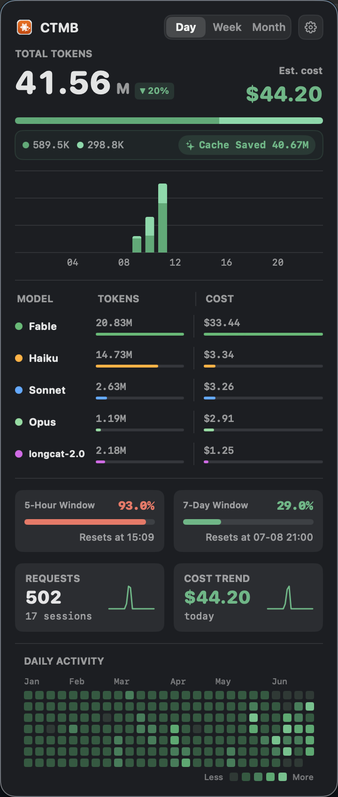

CTMB turns the JSONL files Claude Code already writes into a live dashboard: token rates, real cost per model, rate-limit windows and a year-long activity heatmap. Pure Swift, zero dependencies, everything stays on your Mac.

Lives in your menu bar
One click opens a full breakdown of your usage. It follows your system appearance automatically.
A focused menu bar tool that surfaces exactly what matters about your Claude Code usage.
Double-row input / output token rates while Claude is active, switching to accumulated cost when idle.
Tokens and real cost split across Fable 5, Opus, Sonnet, Haiku and more, ranked with inline bars.
Official rate-limit windows with color-coded progress and reset times, so you never hit a wall by surprise.
A GitHub-style contribution grid of your whole year, plus Day / Week / Month views and a spend trend chart.
Reads local session files only. No network requests, no daemon, no accounts. Your data never leaves the Mac.
Pure Swift + SwiftUI, zero dependencies. Universal binary, English & Chinese, follows your system locale.
CTMB reads the JSONL session files Claude Code already writes locally, parses them, and renders the result entirely on-device. There are no servers, no telemetry, and no sign-in.
Optionally, when claude-code-usage-monitor is running, it layers in the official rate-limit windows too.
~/.claude/projects/*.jsonlCTMB uses the official Anthropic rate table. When an entry already carries cost_usd, that exact value is used instead.
| Model | Input /1M | Output /1M | Cache Write /1M | Cache Read /1M |
|---|---|---|---|---|
| Fable 5 / Mythos | $10.00 | $50.00 | $12.50 | $1.00 |
| Opus 4.x | $5.00 | $25.00 | $6.25 | $0.50 |
| Sonnet 4.x | $3.00 | $15.00 | $3.75 | $0.30 |
| Haiku 4.5 | $1.00 | $5.00 | $1.25 | $0.10 |
Source: Anthropic official pricing
Everything you might want to know before installing CTMB.
No. CTMB only reads the local session files Claude Code writes on your Mac. It makes zero network requests, has no daemon and no accounts. Your usage data never leaves your machine.
Yes. CTMB is free and open source under the MIT license. Download the DMG from GitHub releases, or build it from source.
macOS 14 or later and Claude Code installed. CTMB is a universal binary that runs natively on both Apple Silicon and Intel Macs.
When a session entry already includes an exact cost, CTMB uses it directly. Otherwise it calculates cost from the official Anthropic pricing table for each model: Fable 5, Opus, Sonnet and Haiku.
No. Core token, cost and history tracking works standalone. The official 5-hour and 7-day rate-limit windows appear as an optional enhancement when the claude-code-usage-monitor tool is also running.
Download the DMG, drag CTMB to Applications, and it lands in your menu bar instantly. No Dock icon, no setup.